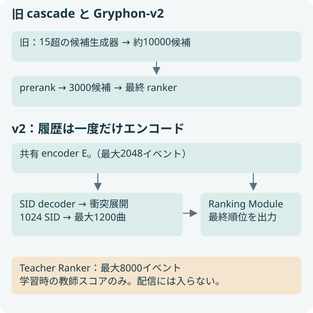
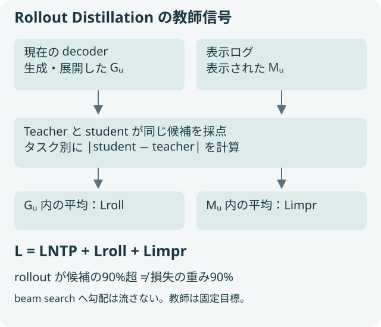
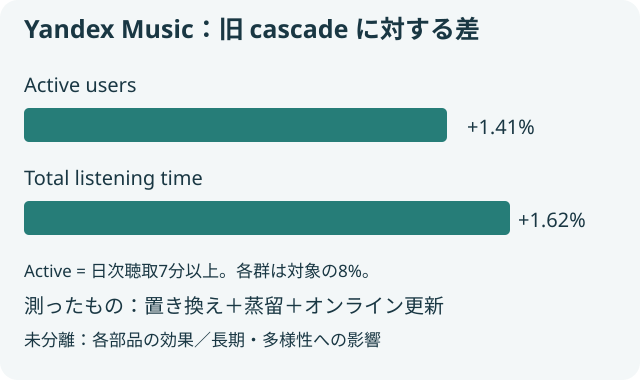

概要
Gryphon-v2 は候補生成と最終順位付けを一つのモデルにまとめる。Yandex Music の A/B では active users +1.41%、総聴取時間 +1.62%を報告。改善はシステム全体の比較で、蒸留だけの因果効果ではない。
問題設定
候補に入る曲と、表示したい曲は一致しない
SID の生成確率は次曲予測のための信号であり、like・skip など複数の目的を調整した最終順位とは異なる。先行 Gryphon は曲単位のスコアを持っても、本番 ranker を必要としていた。
v2 は重い Teacher Ranker の好みを、軽い Ranking Module に移す。教師の方が優れた本番 A/B を得たとの記載はあるが、その対照実験の結果は本論文に掲載されていない。教師の優位を独立に監査できる証拠と、蒸留後のシステムの評価は分けて扱う。
最終 ranker まで配信経路から外す
{kind=link}

核心
著者の主張 · 論文に書かれていること
共有 encoder、SID decoder、Ranking Module を共同学習する。現在の decoder が生成する候補と、過去に表示された曲の両方を Teacher Ranker が採点し、そのスコアを蒸留する。教師は学習時だけ使い、配信では15超の候補生成器・prerank・最終 ranker を一つのモデルに置き換える。
解釈・批評 · 読書メモ
候補分布が鍵になる。先行 Gryphon の次曲予測から、最終順位を教える教師へ変えた点が大きい。TeacherRecall の上昇はこの移植の成功を示すが、教師の偏りまで継承する可能性がある。
モデル / 手法
履歴を一度読み、生成と採点が同じ状態列を使う
Eᵤ=Encodehist(Hᵤ) は履歴を読んだ状態列。双方向 encoder 7層、decoder 2層、Ranking Module 1層、隠れ幅1024、全体0.5Bパラメーターを使う。学生の履歴は最大2048イベント、教師は最大8000イベント。教師の重い履歴計算は配信経路に入らない。
decoder はカタログ trie に制約した beam search で有効な SID を生成する。SID は3 codebook、各32000要素。配信時は1024 SID を曲へ展開し、最大1200曲に抑える。上限を超える場合は低尤度 SID とその衝突集合をまとめて外す。したがって最終採点の前にも候補選別の影響が残る。
pθ(σ|u) = ∏ᵦ pθ(sᵦ | s<ᵦ, Eᵤ)
Iᵤ = ∪σ∈retained beam { i : Φ(i)=σ }
eᵢ = Encodeitem(item ID, SID prefix n-grams)
ranking heads = RankingModule(Eᵤ, eᵢ)
曲表現は曲 ID と SID 接頭辞の n-gram を multi-hash embedding で表す。候補を query にして共有履歴を読み、タスク別スコアを出す。最終順位は教師と同じ固定の組み合わせを使うが、組み合わせの具体的な重みは確認した本文にない。SID の尤度は候補の採否に使い、最終順位は曲単位で決める。
Rollout Distillation は二つの平均誤差を足す
Gᵤ は現在の decoder を各 training step で走らせた候補、Mᵤ は同じ request の表示ログ。両方を同じ教師が採点する。r̂ᵗ は学生、rT,ᵗ は教師、T は順位付けタスクの集合である。
Lroll = (1/|T|) Σₜ (1/|Gᵤ|) Σᵢ∈Gᵤ |r̂ᵗᵤᵢ − rT,ᵗᵤᵢ|
Limpr = (1/|T|) Σₜ (1/|Mᵤ|) Σᵢ∈Mᵤ |r̂ᵗᵤᵢ − rT,ᵗᵤᵢ|
L = LNTP + Lroll + Limpr
LNTP は正の表示曲の SID を学ぶ next-token prediction 損失。順位の教師信号は Teacher Ranker のスコアだけであり、表示ログのラベルを Ranking Module に直接与える方式ではない。異なる候補の90%超が rollout 由来でも、損失は候補源ごとに正規化して係数1で足す。損失は90対10ではない。
NTP は decoder と encoder を、蒸留は Ranking Module と encoder を更新する。beam search には勾配を流さない。policy gradient も使わない。一次資料：§3、Appendix A。
候補数の比率と損失の重みは違う
{kind=link}

なぜ効きそうか
解釈・推論
表示ログだけで学ぶと、旧システムが見せた候補に教師信号が偏る。rollout は学生自身が配信で出す候補の採点を練習させる。一方、表示曲を残せば現在の生成器が拾わない曲も教師から学べる。これは分布の被覆についての解釈であり、混合すれば常に両指標が改善するという一般則ではない。
根拠
候補源を変えると、違う評価軸が動く
下表は原典 Table 3 の点推定。R は Recall@1000、T-R は TeacherRecall@10。WPA は like > play > skip > dislike のラベル順序を使い、ラベル重みの差で加重した pair accuracy である。
| 蒸留候補 | R | T-R | WPA |
|---|---|---|---|
| rollout + impressions | 0.8615 | 0.5654 | 0.5892 |
| rollout only | 0.8610 | 0.5618 | 0.5730 |
| impressions only | 0.8663 | 0.2983 | 0.5872 |
表示ログだけでは教師の top-10 への一致が低く、rollout だけでは表示ログ上の WPA が下がる。表の差は正式な有意差を意味しない。配信設定は MAE・学習 beam 32で固定され、後から比較した MSE が一部指標で良かったことはオンライン検証ではない。
教師一致とユーザー品質を別々に読む
TeacherRecall@k = |Topk(student) ∩ Topk(teacher)| / k は、同じ生成候補内での一致率。教師への忠実度を測る。独立な推薦品質は測らない。WPA も旧 cascade の露出方針で得たログに限定される。原典 Table 1 の学生 WPA 0.5892 と教師0.6199は学習期間も2週間対1年で、対等な条件の比較ではない。
オンラインでは対象ユーザーの8%ずつを control と treatment に割り当てる。active users は1日の聴取7分以上で定義され、+1.41%。TLT は+1.62%、いずれも p<0.001 と報告する。レイテンシーは同程度で、ミリ秒単位の内訳は示されない。蒸留・構造変更・オンライン更新を含む全体の効果である。一次資料：Table 1–4、§5–6。
本番の相対差と、その解釈の境界
{kind=link}

実行可能な理解
uv run papers/gryphon-v2-cascade/run.py
2特徴の線形学生を、固定の線形教師 y=0.8x₁−0.6x₂ に MAE で近づける。表示候補では x₂=0、rollout 候補では x₁=0 と意図して分ける。impression-only、rollout-only、両方の3条件を同じ初期値・2400更新で比較する。各候補源で平均してから足す。
学習と異なる座標で教師誤差と pair accuracy proxy を測る。proxy の正解順も教師から作るため、論文のユーザーラベルによる WPA と同一ではない。衝突と再採点の例は ILSM Lab で実行できる。
このLabは run.py 単体で実行できます。結果はコードと同じフォルダーに保存されます。
結果
合成分布の被覆を調べる線形 MAE toy。pair labels も教師から構成し、独立なユーザー品質を測らない。Production NOT TESTED。
候補源の被覆と教師への一致
| 指標 | weights | rollout_teacher_mae | impression_pair_accuracy_proxy | teacher_mae | pair_accuracy_proxy |
|---|---|---|---|---|---|
| impressions only | [0.8, 0.0] | 0.42 | 1.0 | 0.3 | 0.725 |
| rollouts only | [0.0, -0.6] | 0.0 | 0.0 | 0.48 | 0.575 |
| mix | [0.8, -0.6] | 0.0 | 1.0 | 0.0 | 1.0 |
生の results.json
{
"note": "合成分布の被覆を調べる線形 MAE toy。pair labels も教師から構成し、独立なユーザー品質を測らない。Production NOT TESTED。",
"experiments": [
{
"name": "候補源の被覆と教師への一致",
"metrics": {
"impressions only": {
"weights": [
0.8,
0.0
],
"rollout_teacher_mae": 0.42,
"impression_pair_accuracy_proxy": 1.0,
"teacher_mae": 0.3,
"pair_accuracy_proxy": 0.725
},
"rollouts only": {
"weights": [
0.0,
-0.6
],
"rollout_teacher_mae": 0.0,
"impression_pair_accuracy_proxy": 0.0,
"teacher_mae": 0.48,
"pair_accuracy_proxy": 0.575
},
"mix": {
"weights": [
0.8,
-0.6
],
"rollout_teacher_mae": 0.0,
"impression_pair_accuracy_proxy": 1.0,
"teacher_mae": 0.0,
"pair_accuracy_proxy": 1.0
}
}
}
],
"controls": {
"steps": 2400,
"initial_weights": [
0,
0
],
"loss": "sum of per-source mean absolute errors",
"test_points": [
[
-0.9,
-0.8
],
[
-0.9,
-0.2
],
[
-0.9,
0.2
],
[
-0.9,
0.8
],
[
-0.3,
-0.8
],
[
-0.3,
-0.2
],
[
-0.3,
0.2
],
[
-0.3,
0.8
],
[
0.3,
-0.8
],
[
0.3,
-0.2
],
[
0.3,
0.2
],
[
0.3,
0.8
],
[
0.9,
-0.8
],
[
0.9,
-0.2
],
[
0.9,
0.2
],
[
0.9,
0.8
]
],
"teacher_weights": [
0.8,
-0.6
],
"learned_generator": false
}
}片方の候補源だけでは、観測しない特徴の重みが初期値0のまま残る。混合すると両方向の教師信号を学べる。この例では、片方の候補源からは一方の特徴がまったく観測できないように入力を作っているので、混合による改善をそのまま本番の候補分布へ当てはめたり、原典 Table 3 の差の大きさを予測したりはできない。
検証できたこと
Mechanism PARTIAL。候補源別に正規化した MAE と、入力分布の被覆が教師再現へ与える影響を CPU toy で確認した。生成器の学習や rollout の更新は含まない。
検証していないこと
Performance / Scaling / Production applicability は NOT TESTED。原典の集約 A/B から個別部品の効果は分離できない。長期の満足度、アーティスト多様性、tail coverage、露出集中も未評価と記載される。教師単独の A/B の詳細、最終スコアの重み、絶対レイテンシー、本番ログは独立検証できない。
実装
fit() は MAE の subgradient を標準ライブラリで計算する。evaluate() は未使用座標で誤差と順序を計算する。原典 §3.6 の候補源別損失だけを移し、Transformer・複数タスク・実 decoder・オンライン更新を省略した。教師が誤る場合の実ユーザー品質は扱わない。
原論文・公式コード対応
| 原論文 | この Lab | 省略・公式実装 |
|---|---|---|
| 原典 HTML・提供 PDF | method の式と図は原典から描き直し | 原典の数値と toy の数値を分離 |
| 手法の最小機構 | run.py と results.json |
ニューラルモデル・本番データを省略 |
| 公式コード | 原典で実行可能な公開URLを確認できず | 公式実装との一致は未検証 |